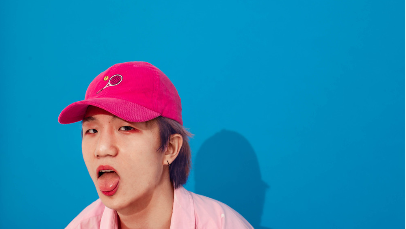

ㅤㅤ ㅤㅤㅤㅤㅤㅤㅤㅤㅤㅤㅤㅤㅤㅤ
배움의 원칙ㅤ
교육과정ㅤ
학교생활ㅤ
학교소식ㅤ
교육실험실21 소개ㅤㅤㅤㅤㅤㅤㅤㅤㅤㅤㅤㅤㅤㅤㅤㅤ
📖입학 상담 및 지원
새로운 시대를 열어 다음 세대를 위한 새로운 학교
사단법인 교육실험실21의 거꾸로캠퍼스는 21세기 학습자를 위한 미래 역량 중심 교육을 제공하는 실험 학교입니다.
미래 사회에서 주체적인 삶을 살며 협력을 통해 긍정적인 변화를 이끄는 인재를 양성합니다.
ㅤ
ㅤㅤㅤㅤㅤㅤㅤㅤㅤㅤㅤㅤ
ㅤ배움의 원칙
ㅤ거꾸로캠퍼스가 실현하는
ㅤ21세기 배움의 원칙 아홉 가지
ㅤ자세히보기→
ㅤ교육과정
ㅤ거꾸로캠퍼스의 교육 과정과
ㅤ교육 프로그램에 대한 안내
ㅤ자세히보기→
ㅤ학교생활
ㅤ거꾸로캠퍼스를 만들어가는
ㅤ학생과 교사들의 이야기
ㅤ자세히보기→
ㅤㅤㅤㅤㅤㅤㅤㅤㅤㅤㅤㅤㅤㅤㅤ
언론보도 [오마이뉴스] 시험, 경쟁, 졸업도 없는 학교... '거꾸로 캠퍼스'의 실체ㅤㅤㅤㅤㅤㅤㅤㅤㅤㅤㅤㅤㅤㅤㅤㅤㅤㅤㅤㅤㅤㅤㅤㅤㅤㅤㅤㅤㅤㅤㅤㅤㅤㅤㅤ2020-11-18
ㅤㅤㅤㅤㅤㅤㅤㅤㅤㅤㅤㅤㅤㅤㅤ공지사항 2021년 상반기 입학 설명회 참가 신청ㅤㅤㅤㅤㅤㅤㅤㅤㅤㅤㅤㅤㅤㅤㅤㅤㅤㅤㅤㅤㅤㅤㅤㅤㅤㅤㅤㅤㅤㅤㅤㅤㅤㅤㅤㅤㅤㅤㅤㅤㅤㅤㅤㅤㅤㅤㅤㅤ
2020-11-18
ㅤㅤㅤㅤㅤㅤㅤㅤㅤㅤㅤㅤㅤㅤㅤ공지사항 2021 상반기 신입생 모집요강 ㅤㅤㅤㅤㅤㅤㅤㅤㅤㅤㅤㅤㅤㅤㅤㅤㅤㅤㅤㅤㅤㅤㅤㅤㅤㅤㅤㅤㅤㅤㅤㅤㅤㅤ ㅤㅤㅤㅤㅤㅤㅤㅤㅤㅤㅤㅤㅤㅤㅤㅤㅤ
2020-11-18
ㅤㅤㅤㅤㅤㅤㅤㅤㅤㅤㅤㅤㅤㅤㅤ언론보도 [EO] 카카오 김범수 네이버 이해진이 투자한 미래학교ㅤㅤㅤㅤㅤㅤㅤㅤㅤㅤㅤㅤㅤㅤㅤㅤㅤㅤㅤㅤㅤㅤㅤㅤㅤㅤㅤㅤㅤㅤㅤㅤㅤㅤㅤㅤㅤㅤㅤㅤㅤ
2020-11-18
ㅤㅤㅤㅤㅤㅤㅤㅤㅤㅤㅤㅤㅤㅤㅤ언론보도 [교육부] 미래 교육 실험실 거꾸로캠퍼스에서 배운다 ㅤㅤㅤㅤㅤㅤㅤㅤㅤㅤㅤㅤㅤㅤㅤㅤㅤㅤㅤㅤㅤㅤㅤㅤㅤㅤㅤㅤㅤㅤㅤㅤㅤㅤ ㅤㅤㅤㅤㅤㅤㅤ
2020-11-18
ㅤㅤㅤㅤㅤㅤㅤㅤㅤㅤㅤㅤㅤㅤㅤ공지사항 2020년 하반기 입학 설명회 참가 신청ㅤㅤㅤㅤㅤㅤㅤㅤㅤㅤㅤㅤㅤㅤㅤㅤㅤㅤㅤㅤㅤㅤㅤㅤㅤㅤㅤㅤㅤㅤㅤㅤㅤㅤㅤㅤㅤㅤㅤㅤㅤㅤㅤㅤㅤㅤㅤㅤ
2020-11-18
학생과 교사가 함께 변화의 주체가 되어 미래의 학교를 만듭니다
거꾸로캠퍼스의 모든 순간은 특별합니다. 학생의 배움과 성장을 위해 변화하는 학교를 확인해보세요.
COVID-19에도 멈추지 않았던 거꾸로캠퍼스
의 협력적 문제해결 학습 교육
"Education In Focus"는 미주개발은행(Inter-치American Development Bank)의 교육부가 운영하치는 블로그입니다. 정책 입안자, 교육 전문...
2020-10-20
더 많은 사람들에게 창덕궁의 가치를 알리려
면?
[프로젝트 이야기] 더 많은 사람들에게 창덕궁의 가치를 알리려면?
거꾸로캠퍼스의 학생들은 여러가지 프로젝트를 경험합니다. 개인의 관심에 따라 정한
2020-08-12
훈련된 학생에서 움직이는 사람으로
[재학생 이야기] 훈련된 학생에서 움직이는 사람으로 2018년 8월에 입학한 이상수 학생은 현재 시각장애인을 위한 산책로 플랫폼 개발 프로젝트를 진행 중
2020-07-15
자유롭게 탐험하고 깊이를 더하는 사람
[졸업생 이야기] 자유롭게 탐험하고 깊이를 더하는 사람 신율 (밤톨) 재학기간 : 2017년 8월 ~ 2019년 5월엑시트 후 : 한국예술종합학교 방송영상과 재학 거
2020-06-30
나만의 언어를 갖고 새로운 관점을 만드는 시
간
[알파랩 이야기] 거꾸로캠퍼스 X 파주타이포그라피배곳 나만의 언어를 갖고 새로운 관점을 만드는 시간 거꾸로캠퍼스에는 데이터 사이언스, 디자인, 메이킹,
2020-08-26
유기견 보호소에서 유기견 안락사가 일어나는 이유?
[프로젝트 이야기] 유기견 보호소에서 유기견 안락사가 일어나는 이유? 거꾸로캠퍼스의 학생들은 여러가지 프로젝트를 경험합니다. 개인의 관심에 따라 정한
2020-08-12
새 질문을 던지고, 새로운 길을 찾는 경험
[재학생 이야기] 새로운 질문을 던지고, 새로운 길을 찾는 경험 2018년 3월 입학해 30개월이 가까운 시간 동안 재학 중인 김해린 학생의 닉네임은 ‘메롱’
2020-07-15

하고 싶은 것을 찾고, 하기 싫은 것을 해내는 힘
[졸업생 이야기] 하고 싶은 것을 찾고, 하기 싫은 것을 해내는 힘 박종태 (퍼프) 재학기간 : 2018년도 3월 ~ 2020년 1월 엑시트 후 : 파주타이포그라피(PaTi)...
2020-06-30
사회를 바라보는 눈이 다양해질 때 생기는 변화
[알파랩 이야기] 거꾸로캠퍼스 X 루트임팩트 사회를 바라보는 눈이 다양해질 때 생기는 변화 거꾸로캠퍼스에는 데이터 사이언스, 디자인, 메이킹, 임팩트...
2020-08-26
함께 배우고, 함께 하는 법을 배우는 곳
[재학생 이야기] 함께 배우고, 함께 하는 법을 배우는 곳 3년을 꽉 채워 거꾸로캠퍼스에 다니고 있는 이남경 학생은 현재 광장시장 한복거리 부흥을 위한 앱
2020-08-26
망설임 없이 도전하는 즐거움
[졸업생 이야기]
망설임 없이 도전하는 즐거움 윤신현 (커피) 재학기간 : 2017년 3월 ~ 2018년 2월 엑시트 후 : MTA LEINN Int 2Gen 재학 중 거꾸로
2020-06-30
스스로 삶의 순서와 가치를 찾는 학교
[리더 이야기] 스스로 삶의 순서와 가치를 찾는 학교 거꾸로캠퍼스의 이성원 대표를 만났습니다. 교직에 발을 들인지 25년째 되던 2015년 어느 날 거꾸로...
2020-06-15
배움의 원칙 교육과정 학교생활 ㅤ 블로그 소개 지원하기
아홉가지원칙 교육과정 학교이야기 공지사항 비전과미션 지원방법 및 입학절차
학교설명서 특별과정 재학생 이야기 학교소식 교육팀 입학상담신청
평가방식 졸업생 이야기 운영팀 입학지원서 작성
학비안내 교사 이야기 연혁
소개
로고다운로드
어워드